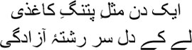
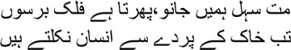

4

Like a kite, my heart had once
Yearned to fly to freedom
 et us allow Mirza sahib to sleep a little. All you other dead, who are lying all around us, who are listening to us, let us all fly away now to the Ballimaran mohalla. We’ll scatter around Mirza sahib’s house in Kasem Jaan’s lane, come along now, get up, let’s listen furtively to the story that the dastangos had told Mirza sahib and Kallu. To tell you the truth, we don’t even need to hide, who can see us, after all? But Mirza sahib just might, I’ve been told he used to talk to the dead all night in his sleep.
et us allow Mirza sahib to sleep a little. All you other dead, who are lying all around us, who are listening to us, let us all fly away now to the Ballimaran mohalla. We’ll scatter around Mirza sahib’s house in Kasem Jaan’s lane, come along now, get up, let’s listen furtively to the story that the dastangos had told Mirza sahib and Kallu. To tell you the truth, we don’t even need to hide, who can see us, after all? But Mirza sahib just might, I’ve been told he used to talk to the dead all night in his sleep.
Clutching Mirza sahib’s hand, Kallu kept pleading, ‘Tell us, huzoor, it’ll sound best coming from you.’
— No. Let this mian tell us. But I still don’t know your name, mian.
— Your servant’s name is Abid, janab.
— Tell us then, Abid mian. Let us hear Mirza Ghalib’s story in your words.
— This is Asad’s story, huzoor.
— Asad?
— Yes. He wasn’t Mirza Ghalib yet. Everyone in Agra called him Asad. Forgive my impudence, huzoor, but Nasrullah Beg Khan …
— Him again?
— But after Asad’s father died it was his uncle, his chacha Nasrullah, who took responsibility for him, huzoor. How can I forget that? This uncle of Asad’s fell from the back of an elephant and died. Asad was orphaned yet again, huzoor.
— What nonsense you spout. Mirza Ghalib grimaced in annoyance. Look, Mirza Ghalib was born an orphan in this world. How could he be orphaned again?
— I don’t understand, huzoor.
— Then listen to a story, mian. Mirza Ghalib smiled. Let’s call him Hamaz. So one day, Hamaz knocked on the door of his love. ‘Who’s there?’ came a cry from within.
— It’s me, said Hamaz.
— There’s no room for ‘me’ and ‘you’ here, came the response. The door wasn’t opened.
After wandering about for a year, Hamaz came back to the same door and knocked. ‘Who’s there?’ came a query from within.
‘It’s you,’ answered Hamaz. The door was opened at once.
— And then, Huzoor? Kallu’s eyes were round.
— That’s it. Asad could not give the answer that Hamaz gave. So Al-Muqtadir sent him to the world an orphan. The door was not opened.
— Who told you this story, huzoor? Abid mian asked.
— A dastango like you. But it was Shaikh Jalaluddin Rumi who told this story long ago in his masnavi.
When he heard the name Abid mian stood up and began to twirl, while a melody rose in the air, ‘Maula … mere maula …’
— Stop dancing, Abid mian. Start the story. Mirza Ghalib shouted.
— All right, huzoor.
After the ritual of kadambusi, touching Mirza’s feet deferentially, Abid mian sat silently for a while. Then he said, ‘Tears spring to my eyes when I see him, janab.’
— See whom?
— Asad mian.
— Why? Why do tears spring to your eyes?
— Only nine years old, fatherless, even the uncle who looked after him gone to his grave, Asad mian wandered around Kale Mahal alone.
— Alone?
— Yes, huzoor. I’ve been told he didn’t talk to anyone. Even if people talked to him, he wouldn’t respond. He used to wander about, waiting to see his mother. He used to run up and down the lanes of Agra all by himself. He would go to the Taj Mahal and sit there for hours. He would go up to the roof at night and count the stars.
— Asad didn’t count the stars, mian.
— What did he do then? Do you know, huzoor?
— Who knows if not him? Kallu screamed. Who but huzoor knows, mian?
— What would Asad do?
— He used to look for one particular star.
— Which star, janab?
— The star from which Asad’s love had tossed him to earth.
— Did Asad manage to identify the star?
— No, mian. Life on the stars was different from life on earth. Once on earth, the star could no longer be identified. How could it, after all? Do you know how dangerous stars are, Abid mian? The star that you’ll see shining in the sky tonight has actually died millions of years ago. Only now has its light reached our world. Tell me, how will you know which star your home was on? You’d better tell the story instead, mian.
— Very well, huzoor. One day, Asad had wandered off to the banks of the Yamuna near the Taj Mahal. He hadn’t met his mother for several days. He had to confine himself to the diwankhana—only if his mother called him to the mahalsarai could he visit her. Why didn’t she ask for him? He spent most of his time hovering around the mahalsarai, earning rebukes for his behaviour. What are you doing here, Asad? Why are you loitering near the women’s chambers? Don’t you have anything better to do? He went up to the terrace, panting with rage, talking to himself, abbajaan, where are you, where have you gone leaving me behind, you’ll never come back, you’ve abandoned me in this house … they don’t let me meet ammijaan, why don’t they, abbajaan?
— Why didn’t they, mian?
— Why, huzoor?
— You’re telling the story, and you don’t know? Mirza Ghalib burst into laughter.
— Asad’s father didn’t leave anything for him, janab. Abdullah Beg Khan didn’t even have a home of his own. Only if he had a home would his wife have lived there, and only then would Asad have got his mother’s company. What sort of marriage was it anyway between Abdullah and Asad’s mother? How much time did they even spend with each other, tell me. Abdullah spent his days travelling from one battlefield to the next; Asad’s mother only spent her days waiting, in Kale Mahal. Then came the news of Abdullah’s death. Only the news, huzoor. Abdullah Beg seemed to vanish into thin air. No one knew where, in which alien land, he was buried. The Turks had a strange custom, huzoor, you know, don’t you? When a man died, his sword was inherited by his son, and his property, by his daughter. Abdullah Beg was lost somewhere; Asad did not get his sword. And Abdullah had nothing by way of property.
— Abid mian …
— Huzoor.
— Have you forgotten what happened on that particular day?
— Which day, huzoor?
— Asad sat down by the Yamuna next to the Taj Mahal. What happened after that, mian?
— Gustakhi maaf, huzoor. This dastan has a mind of its own, I cannot control it. Huzoor, my uncle used to say, stories are unpredictable, you may have chosen a particular direction for it, but soon you’ll discover the dastan taking you down a completely different path.
— He was right. Mirza Ghalib smiled. Only the history of the British is direct, treading a single path. A story has thousands of paths. Haven’t you heard Amir Hamza’s dastan?
— Yes, huzoor. Like they say …

— Right you are, mian. Are we ordinary beings, after all? For billions and billions of years the galaxies have been rotating. Only after that time passed was the curtain of earth pushed aside to give birth to mankind. Can a story ever travel along a single road?
— Asad was sitting on the bank of the Yamuna, huzoor. I’m told he didn’t particularly care for the Taj Mahal.
— Why should he, mian?
— Huzoor …
— Do you know where Mumtaz Mahal’s grave is? It’s in Burhanpur. Nobody goes there. A tiny grave. Why build the Taj Mahal, then? All these things are the whims and fancies of kings, mian. And if it’s beauty you’re talking about, the Taj Mahal is a trifle compared to Fatehpur Sikri. As for the Jama Masjid, it’s a flower from heaven.
— A dervish surfaced from the blue waters of the Yamuna. Round-eyed, Abid mian recounted the story.
— Do you dream, mian? A dervish surfaced from the water of the Yamuna?
— Yes, huzoor. Is there any place on earth where a dervish or a fakir cannot appear?
— And then?
— The dervish asked Asad, why do you wander around alone, Asad? Would you like to be a bird?
— Will you turn me into a bird? Asad looked at the dervish in surprise.
— I will. The dervish put his hand on Asad’s head. —You want to fly across the sky, don’t you? Let me tell you the story of a bird. A merchant used to keep his favourite bird in a cage. He had to go to India on business. It was from India that he had brought the bird. Before leaving, the merchant went up to the cage to ask, ‘What should I get for you?’
— Azadi, janab. Get freedom for me mian, the bird said.
— Azadi? The merchant laughed. —That would mean setting you free. How is that possible? Ask for something else.
— Then please visit the forest I used to live in. Tell the birds there about me. Find out how they are.
— All right. Don’t worry, I’ll get you all the news.
The merchant left. After he had completed all his business, he remembered that he had to enquire after his bird’s family and friends. In the forest, he found a bird just like the one in his cage. The moment the merchant told the bird in the forest about the bird in the cage, the forest bird fell off the tree like a stone. The merchant realized that learning about his cousin after all these years had made the bird die of shock. He felt regretful too; the poor thing died only because of him.
Eventually the merchant returned home. When he went up to his birdcage its occupant asked, ‘How are my friends? Tell me about them, mian.’
— What can I tell you? As soon as I gave the news about you to a bird that looked just like you, he fell off the tree and died.
At this the merchant’s bird also folded its wings, shut its eyes, and fell to the floor of the cage. It did not stir even after being prodded repeatedly. Taking it out of the cage and running his hands over it tenderly, the merchant mused, if only I hadn’t given him this news, my bird wouldn’t have died on being informed of his friend’s death. He placed the bird on the windowsill.
At once the bird flew off to the tree outside the window. Astonished, the merchant ran out to stand beneath the tree and call out to his bird. The bird said, as it flew away, ‘My friend didn’t die, mian. He showed me how I could start flying again. You’re the one who brought me the information. Salaam.’
The bird disappeared.
— Do you know what Asad mian told the dervish after listening to this story, mian? Mirza Ghalib asked.
— No, huzoor.
— I still haven’t understood what life really is, Abid mian. Not even stories can touch it. Only fog—there’s nothing else. Listen, then, I shall tell you the next story.
— What story, huzoor?
— Asad told the dervish, take me with you, Khidr.
— Where?
— Wherever you’re going.
Putting his hand on Asad’s head, he muttered a long incantation. Asad didn’t know what he said. Sitting on the riverbank, he was cold despite the sunshine. Eventually the dervish said, ‘Don’t go away, Asad. Your father did not pass on his sword to you. You will never be able to use a sword, Asad. It’s very difficult, with each stroke you too will die, Asad.’
— Then take me with you, said Asad.
— Where?
— Wherever you’re going. I’ll become a dervish like you.
— This is not your path, Asad. As he spoke, he pulled a mirror out of his bag and handed it to Asad, whose face became dimly visible in it. —Wipe it, polish the mirror properly.
Asad started wiping the mirror. Swaying from side to side, the dervish immersed himself in song.
— And then?
— Asad kept polishing the mirror; the more he did, the more the mirror sparkled. Finally the dervish’s song ended. He said, ‘Look into the mirror now.’
Asad was amazed when he looked into the mirror. He should have seen himself in it, but he wasn’t in the mirror. Instead, it reflected a sky as blue as his mother’s pashmina. Just like the myriad patterns on the shawl, birds were making patterns in this sky. One large bird was followed by numerous smaller ones, their multiple colours and motion forming the design. Asad raised his eyes towards the dervish.
The dervish said, ‘Do you recognize this bird?’
— No.
— That’s the hoopoe. And all those other birds you can see are flying with the hoopoe in search of their king.
— Who is their king?
— Simurg.
— Where does he live?
— On Mount Qaf.
— What will they do when they find Simurg?
— You’ll understand later. The more you polish the mirror, the more clearly will you see the birds flying over one valley after another. They have to cross seven valleys. Eventually, you’ll see Simurg. You will have to keep writing until then.
— What shall I write?
— You shall write of love. You will never find love, Asad, but it is the same love that you’ll have to write about.
— And then? Mirza Ghalib’s eyes seemed to be drifting around an empty expanse. An expanse where the only things alive were bushes of thorns and thistles.